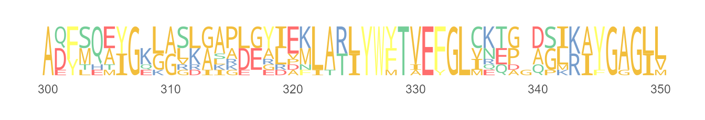
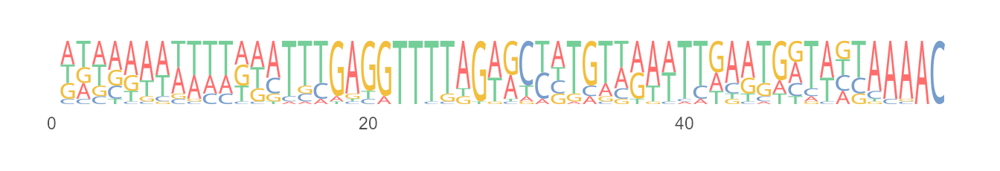
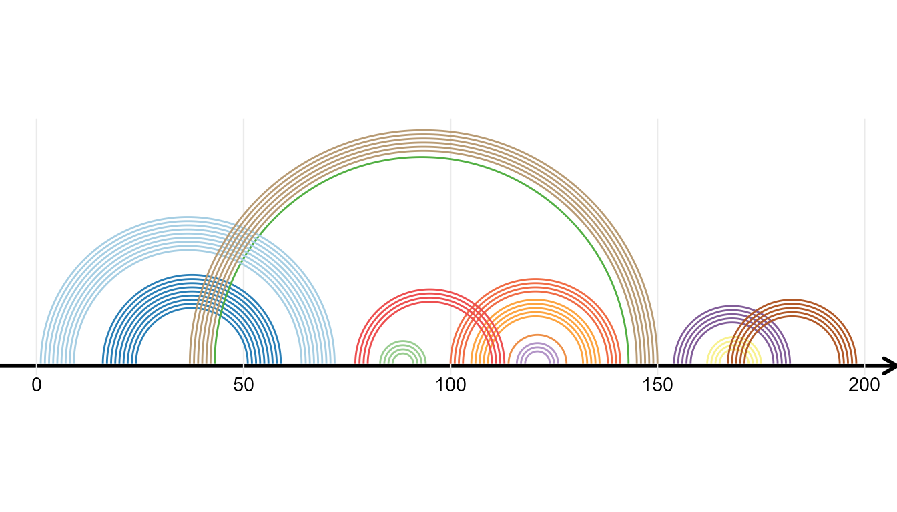

Other Modules
2021-05-12
Other_Modules.Rmdggmsa implements a couple of other modules to plot besides MSA. Such modules plot sequence logos, sequence bundles and RNA secondary structure, individually.
Sequence logo
The seqlogo() allows users to plot sequence logo by sequence alignment individual and logo diagrams can be rendered as output.
seqlogo(protein_sequences, start = 300, end = 350, color = "Chemistry_AA", font = "DroidSansMono")
seqlogo(nt_sequences, color = "Chemistry_NT", font = "DroidSansMono")
Sequence Bundles
Plotting sequence alignment as sequence bundles for visualizing, discovering and exploring sequence motifs.
negative <- system.file("extdata", "Gram-negative_AKL.fasta", package = "ggmsa")
positive <- system.file("extdata", "Gram-positive_AKL.fasta", package = "ggmsa")
ggSeqBundle(negative, bundle_color = "red")
ggSeqBundle(msa = c(negative,positive))
RNA Secondary Structure
ggmsa supports plotting RNA secondary structure as arc diagram by reference to R4RNA. The ‘overlapping structure diagram’ helps to compare RNA secondary structure between RFAM database (known) and base-pair predicted by T RANSAT. The structure shown above the horizontal sequence is the known structure, colored by P-value if correctly predicted by T RANSAT (best in dark blue and worst in light blue).
In the following example, the overlapping structure diagram of the Cripavirus Internal Ribosomal Entry Site is shown. The structure shown above the horizontal sequence is known and the structure below is predicted by T RANSAT:
transat_file <- system.file("extdata", "helix.txt", package = "R4RNA")
known_file <- system.file("extdata", "vienna.txt", package = "R4RNA")
connect_file <- system.file("extdata", "connect.txt", package = "R4RNA")
known <- readSSfile(known_file, type = "Vienna")
transat <- readSSfile(transat_file, type = "Helix")
connect <- readSSfile(connect_file , type = "Connect")
gghelix(known)